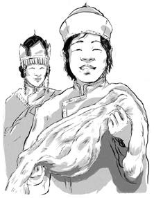
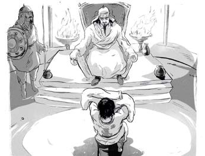
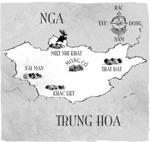
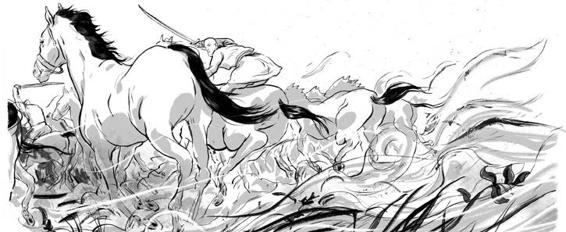
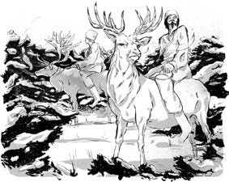
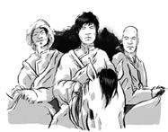
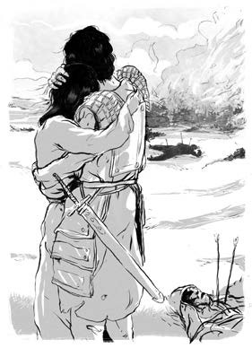
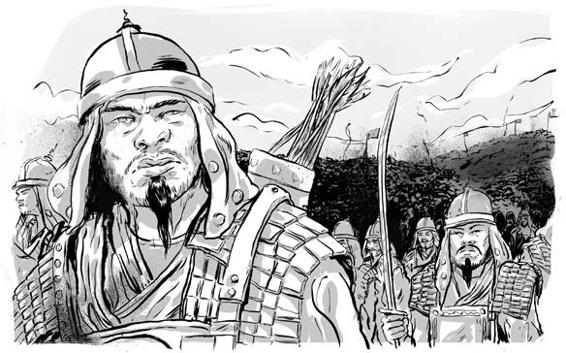
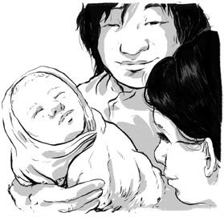
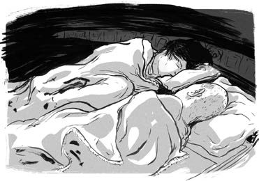

Năm mười sáu tuổi, Thiết Mộc Chân băng qua thảo nguyên để đón vợ. Gia đình Bột Nhi Thiếp rất mừng khi thấy chàng. Cha cô tặng quà cưới cho đôi vợ chồng là một chiếc áo choàng quý làm từ lông chồn đen.
Thiết Mộc Chân trở về nhà cùng Bột Nhi Thiếp, háo hức xây dựng một gia đình mới. Nhưng chàng lo lắng có thể bị bắt một lần nữa hoặc tệ hơn là bị giết. Để bảo vệ bộ lạc của mình, chàng cần những đồng minh.

Thiết Mộc Chân đến gặp bộ tộc Khắc Liệt hùng mạnh để tìm kiếm đồng minh. Chàng đã gặp gỡ tộc trưởng Thoát Lý trong ger vàng. Bởi Thoát Lý và cha của Thiết Mộc Chân là anh em kết nghĩa, Thiết Mộc Chân hy vọng ông sẽ đồng ý trở thành đồng minh của chàng. Để thương lượng, chàng đã tặng Thoát Lý chiếc áo lông chồn tuyệt đẹp.

CÁC BỘ TỘC DU MỤC TRÊN THẢO NGUYÊN

.THẢO NGUYÊN LÀ NGÔI NHÀ CỦA RẤT NHIỀU CƯ DÂN. BỘ TỘC CỦA THIẾT MỘC CHÂN, NGƯỜI MÔNG CỔ, KHÔNG THỐNG NHẤT MÀ CHIA LÀM NHIỀU BỘ LẠC KHÁC NHAU. CÓ RẤT NHIỀU BỘ TỘC HÙNG MẠNH SINH SỐNG XUNG QUANH HỌ. Ở PHÍA TÂY BẮC LÀ TỘC NGƯỜI MIỆT NHI KHẤT CƯỠI TUẦN LỘC. VÙNG ĐẤT PHÍA TÂY VÀ TÂY NAM LÀ LÃNH ĐỊA CỦA NGƯỜI KHẮC LIỆT VÀ NÃI MAN. CÒN PHÍA ĐÔNG LÀ NGƯỜI THÁT ĐÁT.
CÁC BỘ TỘC DU MỤC, NAY ĐÂY MAI ĐÓ VÀ KHÔNG CÓ CHỖ Ở NHẤT ĐỊNH. HỌ THƯỜNG DI CƯ THEO MÙA ĐỂ TÌM NƠI CHĂN THẢ GIA SÚC.
HỌ RẤT NGHÈO. DO ÍT GIAO THƯƠNG VỚI NƯỚC NGOÀI, NÊN HỌ THƯỜNG TẤN CÔNG CÁC BỘ TỘC KHÁC ĐỂ CHIẾM ĐOẠT CỦA CẢI. TRONG SUỐT NHIỀU NĂM, NHIỀU THẾ KỶ, CHIẾN TRANH GIỮA CÁC BỘ LẠC, BỘ TỘC DIỄN RA LIÊN MIÊN.

Thoát Lý đồng ý nhận món quà của Thiết Mộc Chân và trao cho chàng một chức vị trong tộc Khắc Liệt. Nhưng Thiết Mộc Chân từ chối. Chàng chỉ cần Thoát Lý bảo vệ. Đổi lại, chàng và người của chàng sẽ chiến đấu cho Thoát Lý mỗi khi ông cần. Đoạn, Thiết Mộc Chân trở về nhà.
Một ngày nọ, tám con ngựa của Thiết Mộc Chân bị lấy cắp. Chàng cưỡi con ngựa duy nhất còn lại để đuổi theo lũ cướp. Một cậu bé tên Bác Nhĩ Truật đã giúp chàng tìm và giành lại được ngựa.
Thiết Mộc Chân muốn tặng ngựa cho Bác Nhĩ Truật, nhưng cậu từ chối. ‘’Tôi giúp anh‘’, Bác Nhĩ Truật nói, ‘’bởi lúc đó tôi thấy anh đang gặp khó khăn và cần giúp đỡ’’. Sau này Bác Nhĩ Truật gia nhập trại và trở thành bạn thân của Thiết Mộc Chân.
Cũng trong khoảng thời gian này, một cậu bé khác tên Gia Luật Mễ cũng gia nhập trại của Thiết Mộc Chân. Dù cho Gia Luật Mễ được đưa đến với tư cách là người hầu, nhưng cậu vẫn được đối xử bình đẳng. Sau này, Gia Luật Mễ trở thành một vị tướng tin cậy của Thiết Mộc Chân.
Thiết Mộc Chân bấy giờ đã được bảo vệ chắc chắn và có thêm bạn bè mới.

.Nhưng cậu vẫn có rất nhiều kẻ thù.
Đó là khoảng thời gian người Miệt Nhi Khất tấn công trại của Thiết Mộc Chân và bắt cóc Bột Nhi Thiếp.
Sau khi cầu xin thần linh trên đỉnh Burkhan Khaldun, Thiết Mộc Chân phi ngựa xuống núi để nhờ bộ tộc Khắc Liệt giúp đỡ. Thoát Lý cử hai mươi nghìn quân của ông cùng với hai mươi nghìn quân từ đồng minh khác.
Đồng minh đó không ai khác chính là người anh em kết nghĩa, anda Trát Mộc Hợp. Hai người đã tái ngộ!

Họ băng qua núi để tấn công vào trại của Miệt Nhi Khất và giải cứu Bột Nhi Thiếp.
Nhưng Bột Nhi Thiếp không hề biết cuộc tấn công này là để giải cứu cô. Trong lúc hỗn loạn, cô đã chạy trốn.
Chỉ khi nghe thấy Thiết Mộc Chân gọi tên, Bột Nhi Thiếp mới quay lại và chạy đến vòng tay chàng.

Mọi người trở về nhà sau cuộc tấn công.

.Bộ lạc của Thiết Mộc Chân gia nhập cùng đội quân của Trát Mộc Hợp. Bột Nhi Thiếp mang thai và sinh một người con trai vào năm 1179.
Thiết Mộc Chân đặt tên con là Truật Xích, theo tiếng Mông Cổ có nghĩa là “vị khách”.
Có lẽ chàng đặt tên này bởi họ là khách ở bộ lạc của Trát Mộc Hợp. Hay có lẽ cậu cảm thấy Truật Xích là một vị khách đến với bộ tộc Mông Cổ. Có người cho rằng Truật Xích không phải là con của Thiết Mộc Chân, mà là con của một người Miệt Nhi Khất. Nhưng dù thế nào đi nữa, Thiết Mộc Chân vẫn nuôi nấng Truật Xích như con đẻ.
Thiết Mộc Chân đã có một cuộc sống hạnh phúc. Chàng có vợ, có con, bạn bè thân thiết, đồng minh hùng mạnh, và một bộ tộc.

.Thiết Mộc Chân và Trát Mộc Hợp trao cho nhau những món quà lấy được từ trận đánh Miệt Nhi Khất là đai lưng vàng và chiến mã để ghi dấu tình thâm trước toàn bộ lạc. Sau buổi tiệc ăn mừng, hai người nằm ngủ cạnh nhau, như những người anh em thật sự.

Nhưng quãng thời gian tươi đẹp đó kéo dài không lâu.